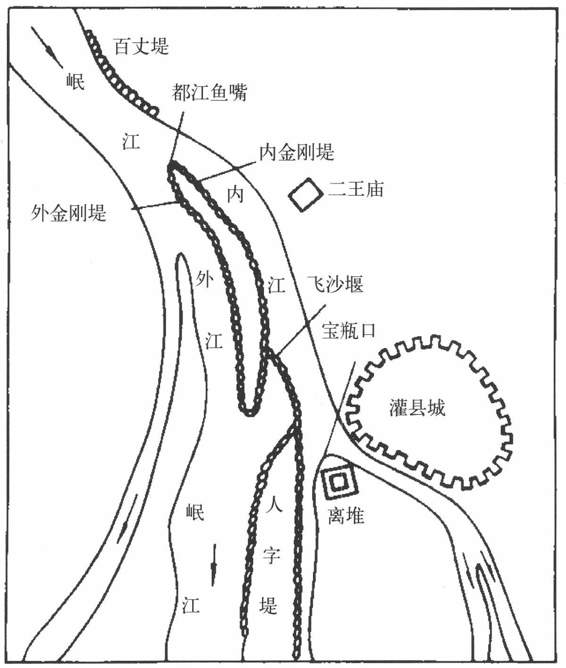
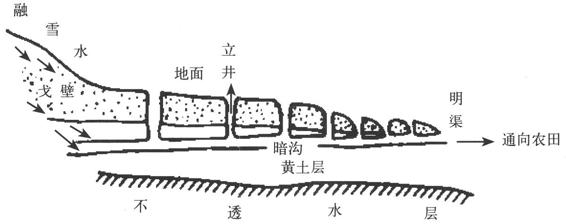
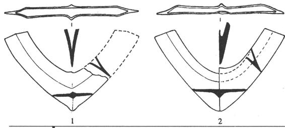
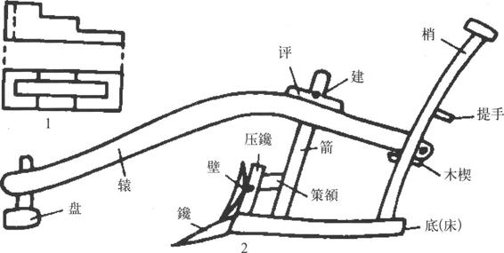
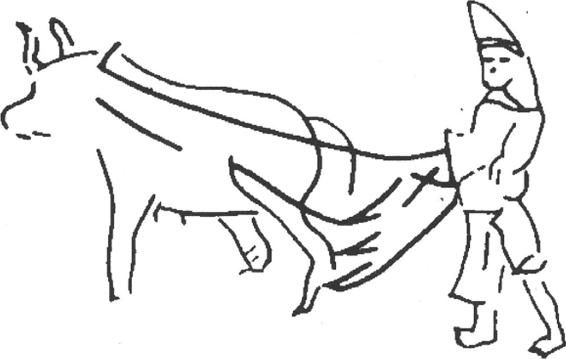

水是农业的命脉。在中国，农业生产的发展与水利有着密切的关系，可以说，有些地区农业的盛衰与水利的兴废直接有关。两者的密切关系具体表现在下列几方面：一是对中国农业经济区的形成和转移有重大影响。如秦、汉时期，一系列大规模灌溉渠系陆续兴建，由此而形成了关中、成都平原和冀、鲁、豫等几个重要农业经济区。东汉至魏、晋，陂塘水利灌溉事业的发展，使江淮之间成为重要农业经济区。中唐以后，长江下游塘浦圩田水利的发展为农业经济重心逐渐南移江南地区创造了条件。其次，水利促进了一些地区耕作栽培制度的发展。如长江流域沮洳下湿地区，随着塘浦圩田水利的发展，排灌技术的进步，耕作栽培制就由一年一熟逐步演进为稻、麦两熟和两稻、一麦的制度。第三，水利使一些地区的作物组成发生变化。黄河流域自西周迄至春秋，主要农作物为黍、稷；而到战国、秦、汉时期，粟、菽（大豆）、麦则成为主要农作物。菽、麦对水分的要求较高，水利灌溉事业的发展是促成这一变化的重要原因之一。再就是农田水利排灌事业的发展，促使一些低产地区变成为农业高产区。
中国农业，自古以来在水的条件方面一直很不理想。中国大部分地区气候受季风影响，降雨量年内分配很不均匀，往往不能满足农业的需要，亟需靠人工灌溉来保证。因此，中国自远古就开始重视农田水利的兴修。从浙江余姚河姆渡遗址出土的大量稻谷遗存以及骨耜来推测，河姆渡人从事水稻生产，已初步掌握了根据地势高低开沟引水和做田埂等的排灌技术。黄河流域一直流传着大禹“疏九河”［23］，“尽力乎沟洫”［24］的传说。这可算得上是中国农田水利事业的萌芽时期了，真正大规模的农田水利工程的兴修，那是到春秋战国时候的事。中国农田水利事业虽然历史悠久，成绩卓著，但总也达不到理想的地步，结果始终是一个由水利而引起各种灾祸所困扰的国家。中国历代当政者都标榜“重农”和讲究水利，二十四史有的就撰有《河渠志》专篇，在《地理志》、《一统志》中也记载有关于农田水利的建设。功绩当然都记到了帝王将相的名下。实际上，贡献更大的是广大农民。农民不经过官府过问，自己联合起来修建农田水利的事例各朝各代、各地皆有。如清代中叶，长江流域无地农民纷纷迁往川、鄂、陕边区山中，开垦山田。他们合力筑造堤堰，控渠引水。其结果如道光时《紫阳县志》所记载的，“深山邃谷到处有人，寸地皆耕，尺水可灌”。由此而推，历史上长江流域广大丘陵地区的开发，情况大体相同。
中国古代因地制宜地创造了多种形式的农田水利工程，有的工程就其规模之大，设计的巧妙和高超技术，都居于当时世界先进之列。
开渠引水以满足作物的水分需要，开水沟排除农田多余的水，是农田水利的主要任务。所以沟渠工程是最普遍的一种形式。商、周时期农田中的沟洫分别起着向农田引水、输水、配水、灌水以及排水的作用。战国时期，列国争霸，为达到富国强兵目的，水利事业备受重视，大型渠系建设迅速兴起。魏国西门豹在今河北临漳一带主持兴建漳水十二渠，［25］为中国最早的大型渠系。自西汉以下数百年间，本地区一直是重要的政治经济区域。公元前3世纪，蜀守李冰主持修建了举世闻名的都江堰工程，至今历时二千多年而不废，效益有增无减。都江堰建于岷江冲积扇地形上，为无坝引水渠系。渠道工程主要由鱼嘴、宝瓶口和飞沙堰三部分组成。整个工程规划布局合理，设计构思巧妙，管理运用科学，施工维修经济，为中国古代灌溉渠系中不可多得的优秀工程。（图18—2）建成后，四川平原遂“旱则引水浸润，雨则杜塞水门……水旱从人，不知饥馑，时无荒年，天下谓之天府也”［26］。关中平原上的郑国渠是规模最大的一个渠系工程，由水工郑国主持修建。渠西引泾水，东注洛水，干渠全长三百余里，计划灌溉面积达四万顷。司马迁评价郑国渠在秦统一事业中所起的作用说：“渠就，用注填淤之水溉泽卤之地四万余顷，收皆亩一钟。于是关中为沃野，无凶年。秦以富强，卒并诸侯。”［27］西汉时，灌溉渠系工程继续发展，关中地区建成了白渠、六辅渠、成国渠、蒙茏渠、灵轵渠、渠等；在今河套地区和河西走廊“皆引河及川谷（水）以溉田”［28］；新疆古轮台（今轮台县）、渠犁（今库勒尔县）、伊循（今若羌县一带）、车师、楼兰（今罗布泊北岸一带）和伊吾（今哈密附近）等地也多有灌溉工程。［29］西汉以后，灌溉渠系工程的发展基本上处于停滞状态，只是在少数地方略有兴建而已。

图18-2 都江堰工程布置示意图
陂塘系利用自然地势，经过人工整理的贮水工程，其功能是蓄水溉田。二千多年前的文献中已有利用陂池灌溉农田的记载：“滮池北流，浸彼稻田。”［30］芍陂兴建于春秋战国时期，是最早的一座大型筑堤蓄水灌溉工程，“陂有五门，吐纳川流”［31］。直径大约百里，周围约三百多里，灌注今安徽寿县以南淠水和淝水之间四万顷田地。今天的安丰塘就是其残存部分。汉代，陂塘兴筑已很普遍，东汉以后，陂塘水利加速发展。陂塘水利适建于丘陵地区，起始于淮河流域，汝南、汉中地区也颇发达。从云南、四川出土的东汉陶陂池模型，可看出当时已在陂池中养鱼，进行综合利用。《淮南子·说林训》中有关于陂塘灌溉面积数量的计算：“十顷之陂可以灌四十顷。”中小型陂塘适于小农经济的农户修筑，南方地区雨季蓄水以备干旱时用，修筑尤多。元代王祯《农书·农器图谱·灌溉门》说：“惟南方熟于水利，官陂官塘处处有之。民间所自为溪堨、水荡，难以数计。”明代仅江西一地就有陂塘数万个。［32］总之，古代遍布各地的陂塘，对农业生产的作用不可低估。
隋、唐、宋时期，水利建设遍及大江南北，太湖流域的塘浦圩田大规模兴修尤为突出。古代太湖地区劳动人民在浅水沼泽，或河湖滩地取土筑堤围垦辟田，筑堤取土之处，必然出现沟洫。为了解决积水问题，又把这类堤岸、沟洫加以扩展，于是逐渐变成了塘浦。当发展到横塘纵浦紧密相接，设置闸门控制排灌时，就演变成为棋盘式的塘浦圩田系统。宋代范仲淹在《答手诏条陈十事》（1043）中描述道：“江南旧有圩田，每一圩方数十里，如大城，中有河渠，外有闸门，旱则开闸引江水之利，潦则闭闸拒江水之害，旱涝不及，为农美利。”太湖地区的塘浦圩田形成于唐代中叶以后。五代时吴越国利用军队和强征役夫修浚河堤，加强管理护养制度，设立“都水营田使”官职，把治水与治田结合起来。这些措施对塘浦圩田的发展和巩固起到了良好作用。北宋初，太湖流域塘浦圩田废而不治，中期又着手修治。南宋时大盛，作了不少疏浚港浦和围田置闸之类的工程。
自汉、唐起，江、浙、福建沿海人民为防御潮水灾害而开始修建江海堤防。海塘在中国东南沿海地区的经济开发过程中占有相当重要地位。海塘从局部到连成一线，从土塘演变为石塘，建筑技术水平不断提高。五代吴越国钱镠在位时，曾在杭州候潮门和通江门外筑塘防潮，所用“石囤木桩法”［33］以木栅为格，格内填进砖石，经涨沙充淤后，就成为远比土塘坚固的土石塘。可以说这是从土塘到石塘的过渡。北宋时，石塘技术上的一次改革就是采用了“坡坨法”，即海塘为斜坡石级式，塘身稳定性优于壁立式海塘，坡阶又起消力作用。明、清时，海塘工程更受重视，投入的人力、物力之多以及技术上的进步都超过其他历史时期。
这是利用地下水的一种工程形式。中国井的起源很早。据考古资料，距今四千多年前的龙山文化遗址中就发掘出了井。北方许多地方地表水不足，故重视发展井灌。战国以来，北方井灌相当流行，历代政府也提倡凿井。明、清时，在今陕西关中，山西汾水下游，河北、河南平原地区形成了井灌区。方承观《棉花图》中说：“植棉必凿井，一井可溉田四十亩。”坎儿井，是新疆地区利用天山、阿尔泰山、昆仑山上积雪融化的雪水经过山麓渗漏入砾石层的伏流或潜水而灌溉的一种独特形式。坎儿井在西汉时就有了。人们根据当地雨量稀少，气候炎热，风沙大的特点，在地下水流相通的地带开凿成列的竖井，其下有横渠（暗渠），然后通过明渠（灌溉渠道）把水送到农田里。这样水行地下，可减少蒸发。清代，林则徐曾在吐鲁番一带大力推广，对炎热干旱的吐鲁番农业发展起了很大作用。（图18—3）

图18-3 坎儿井示意图
农业生产工具自春秋战国以来称之为“田器”、“农器”和“农具”。制造农具的原料，最早是石、骨、蚌、角等。商、周时代出现了青铜农具，种类有锛、臿、斧、斨、镩、铲、耨、镰、犁形器等。这是中国农具史上的一个重大进步。中国铁的冶铸技术发明至迟始于春秋。春秋战国之际，冶铁技术先后出现了生铁冶铸、炼钢和生铁柔化三项技术，使铁器成为更富有广阔前途的锐利工具，加快了铁农具代替木、石、青铜制农具的历史进程。（图18—4）铁农具的使用是农业生产上的一个转折点，它能清除大片森林，使之变为耕地、牧场，也使大面积的田野耕作成为可能；甚至使农业生产关系、土地耕作制度和作物栽培技术等也发生一系列的变化。中国古代的农具按功用可分为下列几类：

图18-4 战国时期的铁犁，河南辉县出土
引水灌溉，最重要的是设法把低处的水引向高处。在这方面，中国古代有过不少灵巧的发明。人们熟悉的水车，也叫“翻车”、“龙骨车”、“水蜈蚣”。它出现于东汉、三国之际，最初只用来浇灌园地，后来被水田区的农民广泛采用，将近二千年来，在生产上一直起着较大的作用。筒车，今天在许多地方还可见到，大约有千年以上历史。这是把一个大的转轮，周围系上许多竹筒或木筒，安置在水边，转轮一部分没在水中，水流激动转轮，轮上的筒就川流不息地依次汲水注到岸上的田地里。元代王祯《农书》里记载的水转翻车、牛转翻车、驴转翻车、高转筒车，构造比较复杂，效率比较高，都是从翻车和筒车变化出来的。高转筒车可以把水引到十丈以上高的地方。为了把水引向远处，则有连筒和架槽的发明。连筒是把粗大的竹竿去掉里面的节，一根根连接起来，下面随地势高下，用木石架起，可以跨越涧谷，把水引到很远的地方。架槽的设计基本上同连筒一样，只是用以引水的是木槽而已。这类器具，正如王祯所说：“大可下润于千顷，高可飞流于百尺，架之则远达，穴之则潜通，世间无不救之田，地上有可兴之雨。”［34］反映出中国古代这方面的创造发明之巧妙，高效而又实用。
耒耜是犁普遍使用前的主要耕具。它类似现代还使用的铁铲、铁锹，也有叫臿或锨的。使用耕畜牵引的耕犁，中国从春秋战国才开始逐渐在一些地区普及使用。甘肃磨嘴子出土的西汉末年的木牛犁模型说明汉代耕犁已基本定型。［35］汉武帝时赵过推广“二牛三人耕”［36］的耦犁，有犁辕、犁梢（犁柄）、犁底（犁床）、犁衡、犁箭等部件。犁壁（又叫犁镜或犁碗）在汉代已广泛使用。汉代的犁是直辕长辕犁，耕地时回头转弯不够灵活，起土费力，效率不很高。经过不断改进，到唐代创制了新的曲辕犁，又叫做“江东犁”。当时陆龟蒙《耒耜经》中详细记述了它的部件、尺寸和作用。这种犁由铁制的犁镵、犁壁和木制的犁底、压镵、策、犁箭、犁辕、犁梢、犁评、犁建、犁盘等十一个部件组成。（图18—5）整个耕犁相当完备、先进，是中国耕犁发展到比较成熟阶段的典型。中国犁又被称作框形犁，是因为犁体由床、柱、柄、辕等部分构成，呈框形的缘故。比起地中海勾辕犁、日耳曼方形犁、俄罗斯对犁、印度犁、马来犁等，它的优点是操作时犁身可以摆动，富有机动性，便于调整耕深、耕幅，且轻巧柔便，利于回转周旋，适于在小面积地块上耕作。另外，使用曲面犁壁，不仅可以更好地碎土，还可起垡作垄，进行条播，利于田间操作和管理。宋代发明了踏犁和犁（）刀，明代又发明了几种人力犁，但都应用范围不广。除犁以外的翻土工具还有镬和铁搭等。农田耕翻后，须经过碎土和平整。平整的农具最早有耰（椎），以后有挞、劳（耱）、耙、碌碡等。甘肃嘉峪关市发现的魏晋墓室壁画中有耙和耱的形象。［37］广东连县西晋墓中出土的陶水田犁耙模型，犁和耙都用牛牵引。［38］水田操作使用的耖，魏晋时南方也已较普遍地使用了。

图18-5 唐代曲辕犁复原图（宋兆麟绘制）
最重要的创造发明是耧车，为汉武帝时搜粟都尉赵过大力推广的新农具之一。据东汉崔寔《政论》说：“其法三犁共一牛，一人将之，下种挽耧，皆取备焉。日种一顷，至今三辅犹赖其利。”“三犁”即三个耧脚。山西平陆枣园西汉晚期墓室壁画上有一人在挽耧下种，（图18—6）其耧车正是三脚耧。［39］用耧车播种，一牛牵引耧，一人扶耧，种子盛在耧斗中，耧斗与空心的耧脚相通，且行且摇，种乃自下。它能同时完成开沟、下种、覆土三道工序。一次播种三行，行距一致，下种均匀，大大提高了播种效率和质量。

图18-6 山西平陆壁画中的播种图
一类是钱、铲和铫，构造大同小异，实质是同一种农具。古代文献往往用来相互注释，《说文解字》十四：“钱，铫也，古农器。”这类农具需运用手腕力量贴地平铲以除草松土，也可用来翻土。另一类是耨、镈和锄，就构造说也大同小异，都是向后用力以间苗、除草和松土的农具，比钱、铲、铫要进步些，至今仍被大量使用着。春秋战国时已有了铁锄；汉代以后的铁锄和近代使用的基本上没有什么差异。耘是水田用的除草、松土农具。王祯《农书·农器图谱·钱镩门》中有耘图。宋、元之际的《种莳直说》中第一次记载了耧锄。这是一种用畜力牵引的中耕除草和培土农具。
新石器时代已有石制或蚌壳制的割取谷物穗子及稿秆的铚与镰。金属出现后，则有青铜和铁制的铚和镰。几千年来，铚和镰的形制基本上没有多大变化。宋以前，还出现了拨镰、艾、翳镰、推镰、钩镰等收获农具。王祯《农书·农器图谱》中记载的由麦钐、麦绰等组成的芟麦器，是一种比较先进的收获小麦的农具。谷物收割脱粒后，利用比重和风力把秕壳与籽粒分开的办法很早就使用了。从《诗经》中可以找到证明：“维南有箕（箕斗，星名，二十八宿之一），不可以簸扬。”［40］1973年河南济源县泗涧沟汉墓出土的陶风车模型，［41］说明至迟西汉晚期已经发明了清理籽粒，分出糠秕的有效工具。风车把叶片转动生风和籽粒重则沉、糠秕轻则飏的经验巧妙地结合在同一机械中，确是一种新颖的创造。